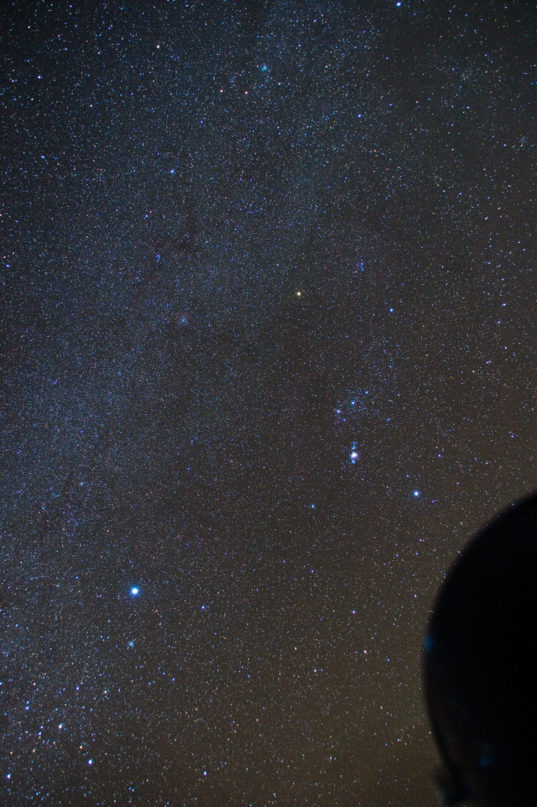

The Milky Way in Winter 冬季银河
与夏季银河相比较，冬季银河就暗淡了许多。与夏季银河位置不同，冬季银河处于从银河系的旋臂朝外的方向，星星的密集程度自然少了很多。然而，冬季星空有着全天最亮的恒星（除太阳）-- 天狼星。它在这张图片的左下方，那颗亮得发白的就是。
图片的右边就是著名的猎户座。那排列得整整齐齐的三颗星是猎户的腰带，它们上面的两颗亮星是猎户的上身。猎户座是天文社社员最喜欢的星座，不仅是因为它显眼，而且还因为它的色彩和“内涵”都很丰富。猎户座的内涵有：
1. M42猎户座大星云，位于腰带三星下方，那个成片状的亮点就是。它是猎户的佩剑！
2. 马头暗星云和火焰星云。它们都位于腰带三星中最左边的星的边上。从这张照片可以看见火焰星云的那一点红色。
拍摄器材和参数：Canon 400D
作者：胡韵希。摄于浙江省安吉县天荒坪。2009年2月1日